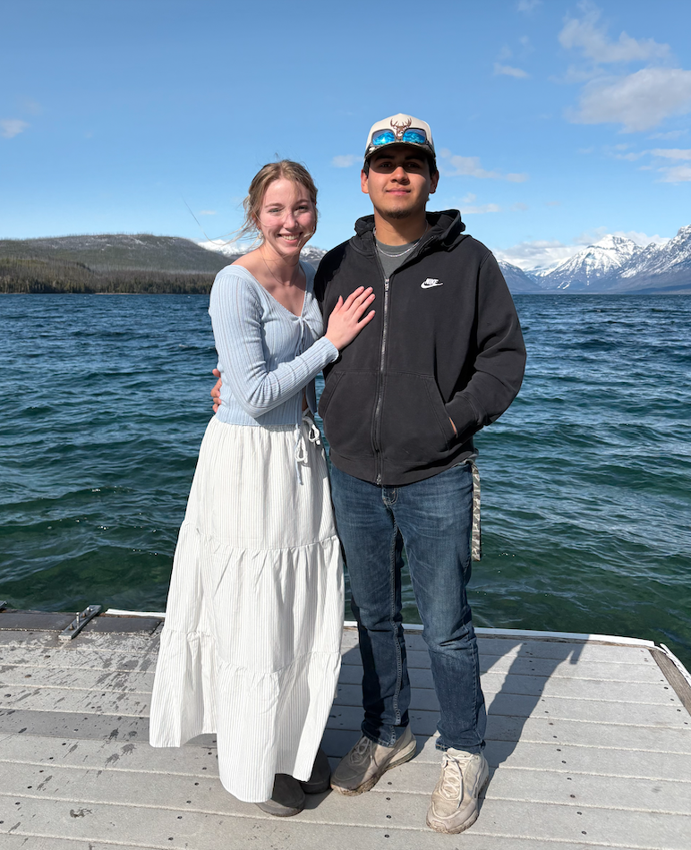
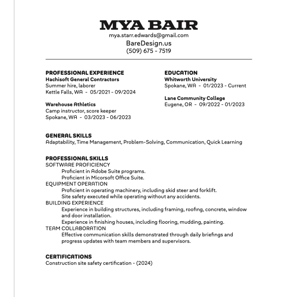

About Mya Bair
Hi, I’m Mya Bair—a graphic designer and aspiring architect based in Kettle Falls. I study at Whitworth University and have a background in both design and construction, which gives me a unique perspective on how things look and how they work.
My style blends bold illustration, clean structure, and visual storytelling. I’m inspired by cartoons, pen and ink work, and artists like RGZ Prints, Tengi, and Daynoart. I start my process with pen sketches, then build digitally using references and mood boards to create designs that are purposeful, functional, and aesthetically strong.
Faith, joy, purpose, and functionality guide my work. I am passionate about two things, Jesus and building— whether that’s homes, brands, or ideas.
Want to work together or learn more? Let’s connect!

Mya Bair's Philosophy
As a graphic designer and aspiring architect, I believe that every design should serve a purpose. Whether in branding, illustration, or architecture, I am drawn to the balance between aesthetics and functionality. My work is characterized by bold outlines, structured compositions, and a thoughtful approach to visual storytelling. I enjoy illustrating many of my pieces to incorporate them into my designs, adding a personal and expressive touch to my work.
My creative intentions revolve around making purposeful, meaningful, and functional work that is also aesthetically pleasing. I strive to design pieces that not only look
good but also work well—whether that means clearly conveying a message, serving
a specific function, or creating a feeling of joy or reverence. I want my work to be both beautiful and useful, reflective of deeper ideas and grounded in intentionality.
Ultimately, I’m someone who wants to build—both literally and visually. I want to design homes, create spaces that people live in and love, but I also love graphic design and illustration as tools for communication. My work is my way of connecting ideas and people, telling stories, and crafting visuals that are as meaningful as they are functional.
About Bare Design
Bare Design is a multidisciplinary studio built around the belief that design should be purposeful, efficient, and deeply functional — without sacrificing creativity. The studio operates in two distinct but connected fields: home design and graphic design.
The home design side of Bare Design focuses on creating spaces that work as beautifully as they look. Each project is approached with a clear focus on how people live, move, and feel in their environments. From layout to material choice, every element is chosen with intention, ensuring that the final space feels natural, useful, and enduring.
Bare Design by Mya Bair is the graphic design branch of the studio, complete with its own logo and creative direction. Mya’s work includes branding, illustration, and digital design — all centered around effective communication and strong visual identity. Her approach is rooted in strategy, with a focus on design that does its job and leaves an impression.
Both branches share a commitment to design that is not only beautiful but built with purpose — crafted to support real people, real needs, and real impact.
